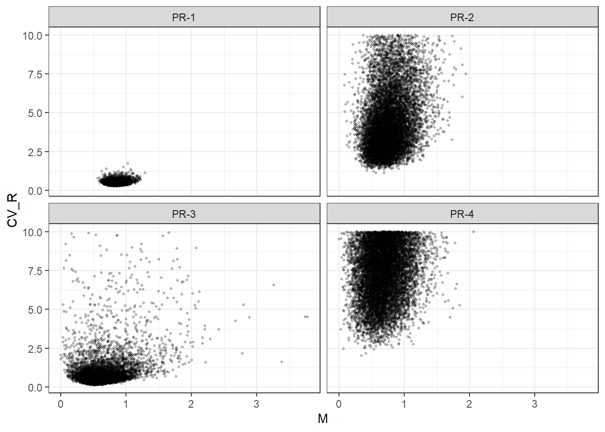
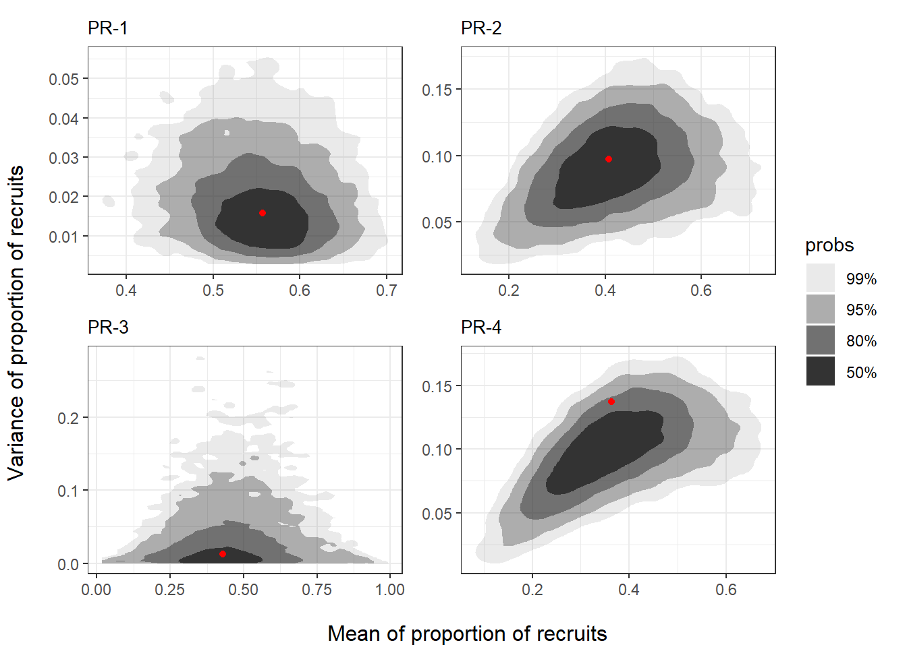
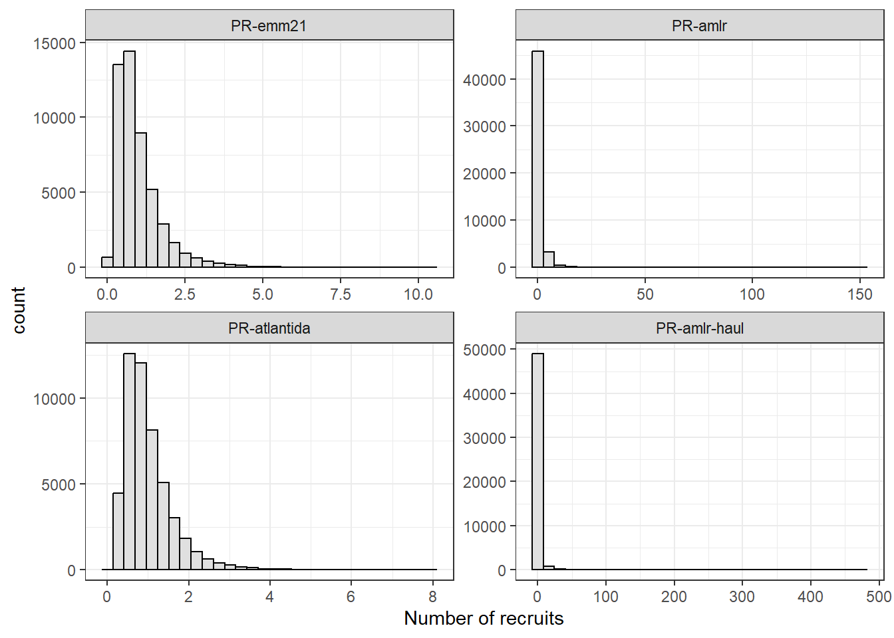

1 Recruitment Variability and Natural Mortality
Generating random draws of Recruitment Variance and Natural Mortality under different Proportional Recruitment scenarios
1.1 Introduction
Yearly recruitment (\(R\)), the number of young individuals that enter the population every year, and annual natural mortality (\(M\)), expressing the fraction of the population dying each year from any non-fishing causes (e.g. disease, competition, predation, etc.) are key parameters in population dynamics models.
Due to challenges in obtaining reliable estimates of krill biomass (and hence numbers) at recruitment, standard krill recruitment modelling is instead based on the proportion of recruits in the population. This method, commonly known as the Proportional Recruitment (PR) model, was firstly proposed by de la Mare (1994) and later expanded by Pavez et al. (2021).
Using the mean and variance of the proportion of recruits estimated from independent surveys, the PR model derives the recruitment natural variability (expressed as a coefficient of variance, \(CV_R\)) and natural mortality of the population. Estimated values of \(M\) and \(CV_R\) can subsequently be used to generate series of \(R\) that follow the underlying distribution of proportion of recruits (or, specifically, the odds of recruits).
Additionally, as PR estimates are obtained from a finite number of surveys, the PR framework also provides alternative methods to convey the uncertainty in parameters \(M\) and \(CV_R\). These methods involve generating random draws of \(M\) and \(CV_R\) via resampling-based techniques such as parametric bootstrap or inverse probability transform (Pavez et al. 2021).
In this section we generate random draws of \(CV_R\) and \(M\) under different scenarios of proportional recruitment, which will be used in population model projections at later stages of the analysis. The PR models and scenarios used here are very similar to those applied in D. Maschette et al. (2021), with the exception that the proportion of recruits is assumed to be log-Normally distributed (as opposed to inverse-Beta).
Many of the key functions used in this analysis are available in a CCAMLR’s code repository, which provides a base-case implementation of {GRYM} for the stock assessment of the Antarctic Krill.
1.2 Set-up the Proportional Recruitment Scenarios
The PR model requires the following input parameters:
- The within-year natural mortality structure
- The quantile function that defines the distribution of recruits
- The mean and variance estimates of the proportion of recruits obtained from time-series of independent surveys, and the number of surveys conducted
- The reference age-class to determine the proportion of recruits in model simulations
- Approximate estimates of \(M\) and \(CV_R\)
- The number of parameter sets to generate
For the purpose of this analysis, PR scenarios are defined by a set of different recruitment proportion estimates (item 3, above). Within-year natural mortality pattern and recruits distribution (items 1 and 2, respectively) remain fixed across all scenarios.
We begin by reading-in estimates of recruitment proportion under each scenario, before specifying the remaining fixed parameters.
1.2.1 Loading estimates of recruitment proportion
pr_scenarios <- read_xlsx(
path = "../part1_shared_files/inputs/grym_parameter_scenarios.xlsx",
sheet = "rec_proportion_scenarios"
) |>
select(-ref) |>
mutate(
pr_scen_id = factor(pr_scen_id, levels = unique(pr_scen_id)),
n_surveys = as.integer(n_surveys)
) Scenario-specific estimates of the fraction of recruits in the population (Table 1.1) are a subset of those provided in D. Maschette et al. (2021). Estimates were calculated from different choices of survey time-series, proportion calculation method, length cut-off thresholds, sample estimates weighting, etc (check D. Maschette et al. 2021 for further details). Proportion calculation methods are detailed in D. Maschette and Wotherspoon (2021, Appendix 1).
Code
# table with recruitment proportion under each scenario
pr_scenarios |>
select(-c(independent_unit, time_period)) |>
relocate(pr_scen_id, Maschete_description, rprop_calc_method, data_years, further_details, mn_Rprop:sd_Rprop) |>
flextable() |>
colformat_double() |>
set_table_properties(width = 1) |>
#set_table_properties(width = 1, layout = "autofit") |>
width(j = c(1, 3, 4), width = 1.2) |>
width(j = c(2, 5), width = 1.5) |>
set_header_labels(
pr_scen_id = "PR Scenario ID",
data_years = "Years of data",
Maschete_description = "Label in Maschette et al (2011)",
mn_Rprop = "Mean of recruitment proportion",
sd_Rprop = "SD of recruitment proportion",
n_surveys = "Nr of Surveys",
further_details = "Further details",
rprop_calc_method = "Calculation method"
)PR Scenario ID | Label in Maschette et al (2011) | Calculation method | Years of data | Further details | Mean of recruitment proportion | SD of recruitment proportion | Nr of Surveys |
|---|---|---|---|---|---|---|---|
PR-emm21 | (1) Initial values | Mixture analysis | 1977-1993 | Initial values discussed by WG-EMM-2021 | 0.5570 | 0.1260 | 17 |
PR-amlr | (2) US-AMLR summer | Length threshold (cut-off @ 36mm) | 1992-2011 | Catch weighted PR by survey, strata scaled | 0.4079 | 0.3118 | 20 |
PR-atlantida | (4) Atlántida survey | Length threshold (cut-off @ 36mm) | 2020 | Catch weighted PR by strata, strata scaled | 0.4281 | 0.1112 | 3 |
PR-amlr-haul | (6) US-AMLR summer haul-by-haul | Length threshold (cut-off @ 40mm) | 1991-2011 | Catch weighted PR by haul | 0.3630 | 0.3700 | 21 |
1.2.2 Specify remaining parameters
We now specify the choices for the other model parameters, which remain unchanged across all the considered PR scenarios.
Note: To ensure consistency in model inputs across multiple stages of the current analysis, GRYM setup parameters have been stored in an external file.
# Load fixed parameters
pr_fixed_pars <- read_xlsx(
path = "../part1_shared_files/inputs/grym_parameter_scenarios.xlsx",
sheet = "fixed_parameters"
) |>
filter(category %in% c("PR model", "Mortality", "Population model structure", "Simulation options")) |>
select(parameter_tag, value) |>
pivot_wider(names_from = parameter_tag) |>
select(-c(Fmax, n.years))
pr_fixed_parsWithin-year natural mortality pattern
Similarly to D. Maschette et al. (2021), assuming the impact of natural mortality is constant throughout the year.
# within-year mortality option
pr_fixed_pars$M_within_year[1] "constant"Calculate the associated final row of unscaled integrated natural mortality, which is used in the PR model to compute survivals.
# modelled age-classes
Ages <- as.integer(pr_fixed_pars$first_age:pr_fixed_pars$last_age)
n_steps <- as.integer(pr_fixed_pars$nsteps)
# Within-year natural mortality pattern
if(pr_fixed_pars$M_within_year == "constant"){
# Assuming the impact of natural mortality is constant throughout the year
ms <- matrix(1, n_steps+1, length(Ages))
}else{
stop("Option for within-year pattern in M not identified ('constant' is the only currently available option)")
}
# calculate the proportion of an individual time step in the year
h <- 1/n_steps
# calculate the unscaled integrate natural mortality of each age (columns)
# through the year (rows)
Ms <- ctrapz(ms, h)
# final row of the unscaled integrated natural mortality
Msf <- final(Ms)
Msf[1] 1 1 1 1 1 1 1PR quantile function
Recruitment is assumed to follow a log-Normal distribution. This is a deviation from the approach taken in D. Maschette et al. (2021), where recruitment was assumed to be inverse-Beta distributed. The rationale behind this decision was to align simulations under {GRYM} with those in the {openMSE} framework, which assumes that recruitment process error (i.e. deviations from expected number of recruits) is log-normally distributed.
Functions qLogNormal() and recLogNormal() are provided here.
pr_fixed_pars$pr_dist[1] "Log-Normal"Code
if(pr_fixed_pars$pr_dist == "Log-Normal"){
# quantile function of the target distribution for odds of recruitment proportion
qdist <- qLogNormal
# function to generate nr of recruits under the target distribution
recdist <- recLogNormal
}else if(pr_fixed_pars$pr_dist == "Inverse-Beta"){
qdist <- qInverseBeta
recdist <- recInverseBeta
} else if(pr_fixed_pars$pr_dist == "Gamma"){
qdist <- qGamma
recdist <- recGamma
} else{
stop("Chosen value for distribution of odds of recruits is not valid.")
}Reference age-class, number of iterations and starting values
As in Krill’s assessment base-case and D. Maschette et al. (2021), setting the 2nd age-class as the reference class (i.e. recruitment proportion is the fraction that the second age-class is of the population of age-class 2 and older).
# reference age-class
ref_age <- as.integer(pr_fixed_pars$pr_ref_age)
# number of iterations
niter <- as.integer(pr_fixed_pars$n_iter)
# Starting values, i.e. best guess estimates of M and recruitment CV
M0 <- 0.6
CV0 <- 11.3 Generate parameter draws
In this section we use the PR model to generate random draws of variability in recruitment, expressed as coefficient of variance (\(CV_R\)), and annual natural mortality (\(M\)) for the scenarios under consideration.
This is achieved using the inverse probability transform approach described in Pavez et al. (2021) and implemented in function prfit(), available from krill’s base-case code repository.
At each iteration, the PR model is fitted by determining the properties of the underlying distribution of odds of recruits (\(Q\)), which depend on both \(M\) and \(CV_R\), for a given set of random quantiles of the distribution of \(Q\). Values of parameters \(M\) and \(CV_R\) are adjusted to provide the best fit between model predictions and observed data in terms of mean and variance of recruitment proportion in surveys. The fitting process is repeated niter times with newly generated random quantiles, each time returning a single set of estimates (i.e. draws) of \(M\), \(CV_R\) and associated mean (\(\mu_Q\)) and variance (\(\sigma^2_Q\)) of odds of recruit.
1.3.1 Prepare model and data for parallel computations
Parallelization is conducted at the iteration level, with each parallel node fitting one PR model at a time. We first define the function gen_rec_draws() to apply the PR model fitting function prfit() for the specified number of iterations in parallel, for a given set of PR parameter values.
# Wrapper function to run PR models in parallel via `{furrr}`, using
# `{progressr}` for progress feedback
gen_rec_draws <- function(niter, mn_Rprop, sd_Rprop, n_surveys, M0, CV0, ref_age, qdist, Msf){
p <- progressor(steps = niter)
future_map_dfr(
1:niter,
function(x){
out <- prFit(qdist = qdist, Msf = Msf, mnR = mn_Rprop, vrR = sd_Rprop^2,
n = n_surveys, M0 = M0, CV0 = CV0, r = ref_age)
p()
out
},
.options = furrr_options(seed = TRUE)
)
}After setting up a reference data frame comprising the parameter values under each scenario, we are ready to run the PR models.
# data.frame with PR inputs under each scenario
scens_sim_pars <- pr_scenarios |>
select(pr_scen_id, mn_Rprop, sd_Rprop, n_surveys) |>
mutate(M0, CV0, ref_age, qdist = list(qdist), Msf = list(Msf))1.3.2 Fit PR models for each scenario
The model fitting process is performed sequentially over the considered scenarios, within which multiple fits are performed in parallel via the gen_rec_draws() function.
# Note: Model fitting runtime is substantial for some scenarios, so this code chunk
# must only be executed interactively, i.e. it shouldn't be evaluated during
# document rendering
if(file.exists("../part1_shared_files/outputs/cvR_M_draws_scen.rds")){
cat("\n")
useropt <- readline(prompt = "File with parameter draws already exists. Want a re-run? ([Y]es or No): ")
run_fitting <- ifelse(str_starts(useropt, "Y|y"), TRUE, FALSE)
}else{
run_fitting <- FALSE
}
if(run_fitting){
# set number of cores to use
plan(multisession, workers = availableCores()-2)
handlers("progress")
tic()
cvR_M_draws_scen <- scens_sim_pars |>
rowwise() |>
pmap(function(pr_scen_id, mn_Rprop, sd_Rprop, n_surveys, M0, CV0, ref_age, qdist, Msf){
cli::cli_alert(glue::glue("Running {pr_scen_id}"))
with_progress(
out <- gen_rec_draws(niter = niter, mn_Rprop = mn_Rprop, sd_Rprop = sd_Rprop,
n_surveys = n_surveys, M0 = M0, CV0 = CV0, ref_age = ref_age,
qdist = qdist, Msf = Msf)
)
cli::cli_alert_success(glue::glue("Finished {pr_scen_id}"))
out
})
toc()
plan(sequential)
names(cvR_M_draws_scen) <- scens_sim_pars$pr_scen_id
# save draws externally
write_rds(x = cvR_M_draws_scen, "../part1_shared_files/outputs/cvR_M_draws_scen.rds")
}1.4 Outputs checking
Having a look at the outputs for a couple of scenarios, where listed data.frames comprise random draws of \(M\), \(CV_R\), \(\mu_Q\) and \(\sigma^2_Q\) for the corresponding PR scenario.
cvR_M_draws_scen$`PR-emm21` |> round(3) |> glimpse()Rows: 10,001
Columns: 4
$ M <dbl> 0.959, 0.909, 0.968, 0.873, 0.757, 0.833, 0.832, 0.846, 0.827, 0.…
$ CV_R <dbl> 0.506, 0.670, 0.514, 0.430, 0.754, 0.439, 0.374, 0.411, 0.452, 0.…
$ mnQ <dbl> 1.615, 1.488, 1.638, 1.402, 1.143, 1.310, 1.306, 1.338, 1.294, 1.…
$ vrQ <dbl> 0.667, 0.993, 0.707, 0.364, 0.743, 0.330, 0.239, 0.302, 0.343, 0.…cvR_M_draws_scen$`PR-atlantida` |> round(3) |> glimpse()Rows: 10,001
Columns: 4
$ M <dbl> 0.497, 0.519, 0.660, 0.778, 0.287, 0.609, 0.371, 0.703, 0.652, 0.…
$ CV_R <dbl> 0.503, 0.242, 0.469, 0.498, 0.596, 0.483, 0.489, 0.396, 0.446, 0.…
$ mnQ <dbl> 0.679, 0.712, 0.953, 1.189, 0.405, 0.861, 0.503, 1.036, 0.939, 0.…
$ vrQ <dbl> 0.116, 0.030, 0.199, 0.350, 0.058, 0.173, 0.060, 0.168, 0.175, 0.…Next we take a look at the generated draws.
Code
cvR_M_draws_scen_df |>
ggplot(aes(x = M, y = CV_R)) +
geom_point(size = 0.8, alpha = 0.25) +
facet_wrap(~pr_scen_id)
And complement the with the corresponding summary statistics.
Code
cvR_M_draws_scen_df |>
group_by(pr_scen_id) |>
summarise(
`Mean of M` = mean(M),
`SD of M` = sd(M),
#`Median of M` = median(M),
# `2.5% of M` = quantile(M, probs = 0.025),
# `97.5% of M` = quantile(M, probs = 0.975),
`mean of CV_R` = mean(CV_R),
`sd of CV_R` = sd(CV_R))In general, scenarios based on surveys observing higher mean recruitment proportions generate draws (i.e. estimates) of \(M\) that are, on average, higher. This is expected since higher natural mortality rates lead to a rapid decline of numbers in older age-classes, making the proportion of recruits in the population more prominent. The opposite occurs when natural mortality is low.
Regarding recruitment variability, the magnitude of drawn \(CV_R\) estimates is, unsurprisingly, correlated with to the variance in observed recruitment proportion under each scenario (see Table 1.1 for reference). Evidently, highly variable yearly recruitment will cause the fraction of recruits in the population to fluctuate strongly from year to year.
The level of uncertainty about parameters \(M\) and \(CV_R\) for the considered scenarios is reflected by the spread of the generated draws, which is conveyed by the plots in Figure 1.1 and, relatedly, the standard deviation of draws presented in the table above. Results suggest that uncertainty is affected by the variability in recruitment and the number of surveys from which proportion of recruits are estimated (Table 1.1 for reference).
Some further observations:
draws generated under the “PR-emm21” scenario are notably more condensed compared to the remaining scenarios. This indicates that “PR-emm21” has the lowest uncertainty about both \(M\) and \(CV_R\) parameters.
Despite the relatively low values of \(CV_R\) drawn under “PR-atlantida”, uncertainty about \(M\) and \(CV_R\) for this scenario is larger (i.e. SD is higher) than that obtained under “PR-emm21”. This is likely related to the fact that recruitment proportions were calculated from only 3 surveys (as opposed to 17 surveys under “PR-emm21”).
Differences in the distribution of draws of \(M\) and \(CV_R\) between scenarios “PR-amlr” and “PR-amlr-haul” illustrate the impact of length cutoff thresholds and sample weighting choices applied during the estimation of the recruitment proportion in surveys.
Draws of \(CV_R\) for scenarios “PR-amlr” and “PR-amlr-haul” show that yearly recruitments \(R\) series simulated under these scenarios will have sizable levels of variability (i.e. over 400% and 700%, respectively).
1.4.1 Reverse-check
Here we simulate survey estimates of mean and variance of recruitment proportion from the PR model, for each of the considered scenarios. Recruitment series are generated from each draw of \(M\) and \(CV_R\), which are then used to simulate the proportion of recruits that would be seen in surveys. Thus, each draw generates a series of “observed” proportion of recruits from which estimates are calculated.
The core simulating function prSim() is provided in krill’s base case code repository. Figure 1.2 display the simulation results in terms of highest density region (HDR) plots.
scens_sim_pars |>
mutate(pr_scen_id = factor(pr_scen_id, levels = unique(pr_scen_id))) |>
group_split(pr_scen_id) |>
map2(.y = cvR_M_draws_scen, function(scn_pars, scn_draws){
# Simulate observation process for each draw of CV_R and M, i.e. generate
# `n` random age structures for each draw of CV_R and M and estimate mean
# and variance of the proportion of recruits that would be observed in surveys
pr_mn_vr <- map2_df(
scn_draws$M,
scn_draws$CV_R,
~prSim(
qdist = scn_pars$qdist, Msf = scn_pars$Msf[[1]], n = scn_pars$n_surveys,
M = .x, CV = .y, r = scn_pars$ref_age
)
)|> rename(sim_mnQ = mnR, sim_vrQ = vrR)
title <- scn_pars$pr_scen_id
# Compare simulated values of mean and variance of proportional recruitment
# with those actually obtained from surveys
ggplot(pr_mn_vr, aes(x = sim_mnQ, y = sim_vrQ)) +
geom_hdr() +
geom_point(aes(x = mn_Rprop, y = sd_Rprop^2), colour = "red", data = scn_pars) +
labs(title = title) +
theme(axis.title = element_blank(), plot.title = element_text(size = 10))
}) |>
wrap_plots(guides = 'collect') |>
patchworkGrob() |>
gridExtra::grid.arrange(
left = "Variance of proportion of recruits",
bottom = "Mean of proportion of recruits"
)
Results suggest that simulated surveys based on generated parameter draws produce estimates of recruitment proportion that are consistent with those obtained from observed surveys.
1.4.2 Exemplify generation of recruitment series
For completeness, we generate a recruitment series from a single draw of PR estimates. Simulated numbers of recruits are log-normally distributed with mean of 1 and coefficient of variance given by the used draw of \(CV_R\).
r_series <- cvR_M_draws_scen |>
map(slice, 5) |>
bind_rows(.id = "pr_scen_id") |>
mutate(pr_scen_id = factor(pr_scen_id, levels = unique(pr_scen_id))) |>
rowwise() |>
mutate(
rec_series = list(recdist(n = 50000, mn = mnQ, vr = vrQ))
) |>
unnest(rec_series)
r_series |>
ggplot() +
geom_histogram(aes(x = rec_series), col = "black", fill = "gray88") +
labs(x = "Number of recruits") +
facet_wrap(~pr_scen_id, scales = "free")
Comparing drawn value of \(CV_R\) with summary statistics of the generated recruitment series.
Code
r_series |>
group_by(pr_scen_id, CV_R) |>
summarise(
mn_R_series = mean(rec_series),
sd_R_series = sd(rec_series),
cv_R_series = sd_R_series/mn_R_series,
.groups = "drop"
)1.5 Wraping up
We now have random draws of recruitment parameters and natural mortality, which convey the uncertainty about those parameters. Generated draws will be used as inputs for the GRYM (Chapter 2) and openMSE (Chapter 3) tools to run population projections and estimate harvest rate levels that satisfy the sustainability rules currently in place for the management of the krill stock.